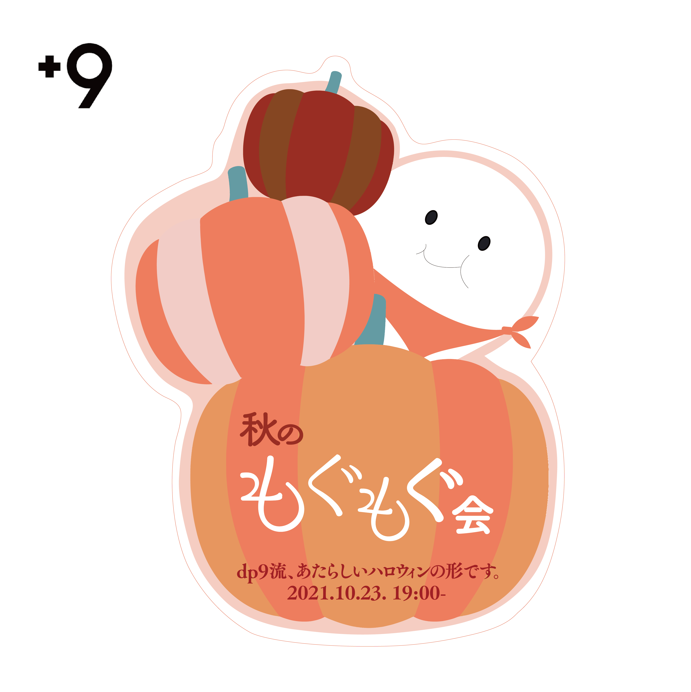
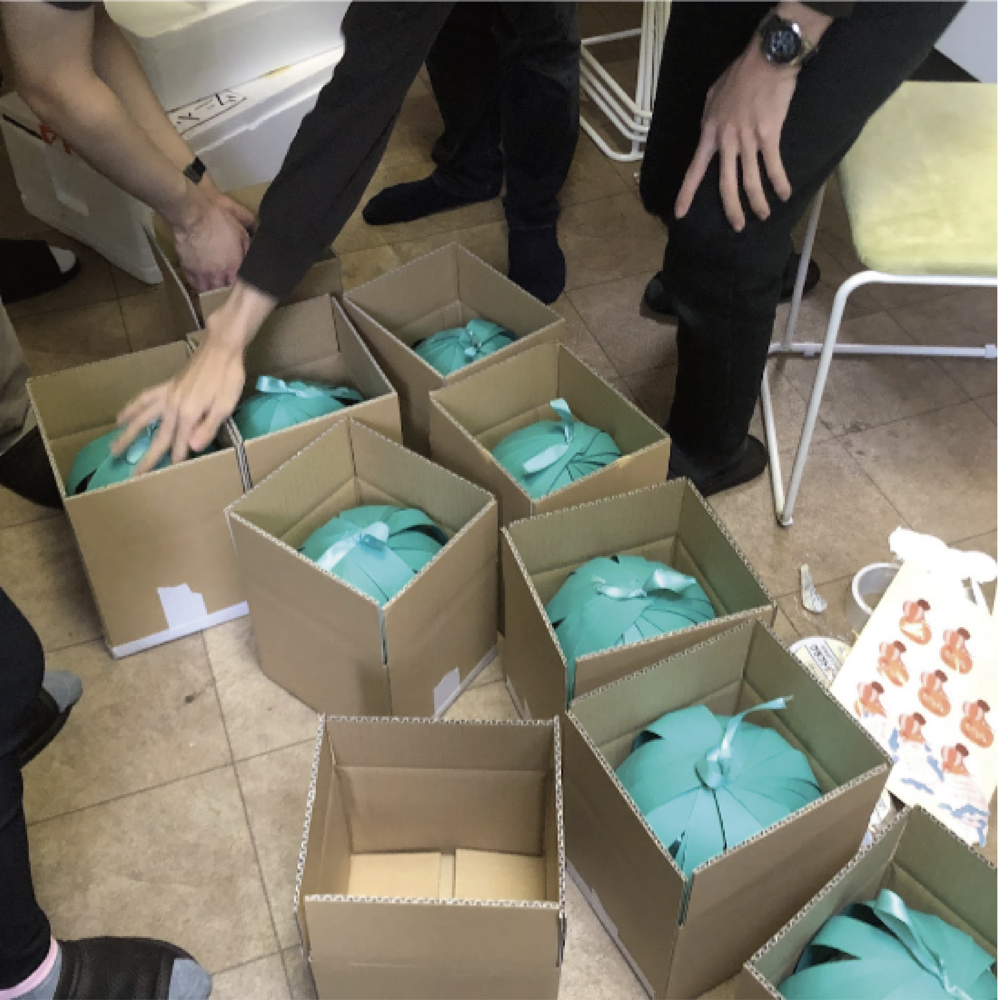
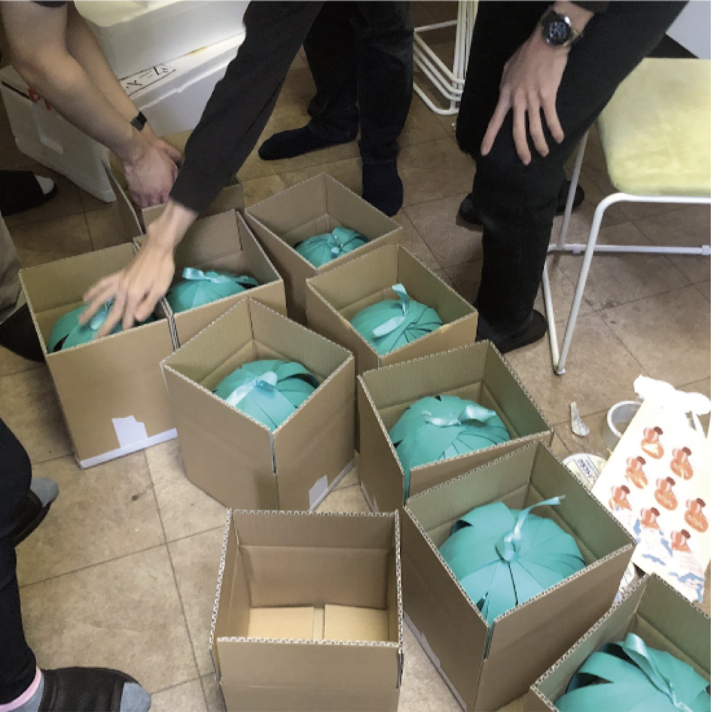
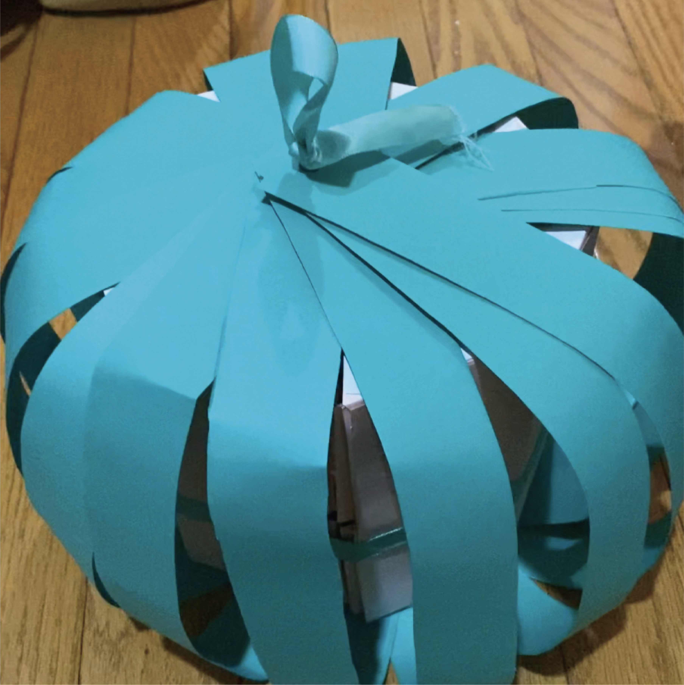
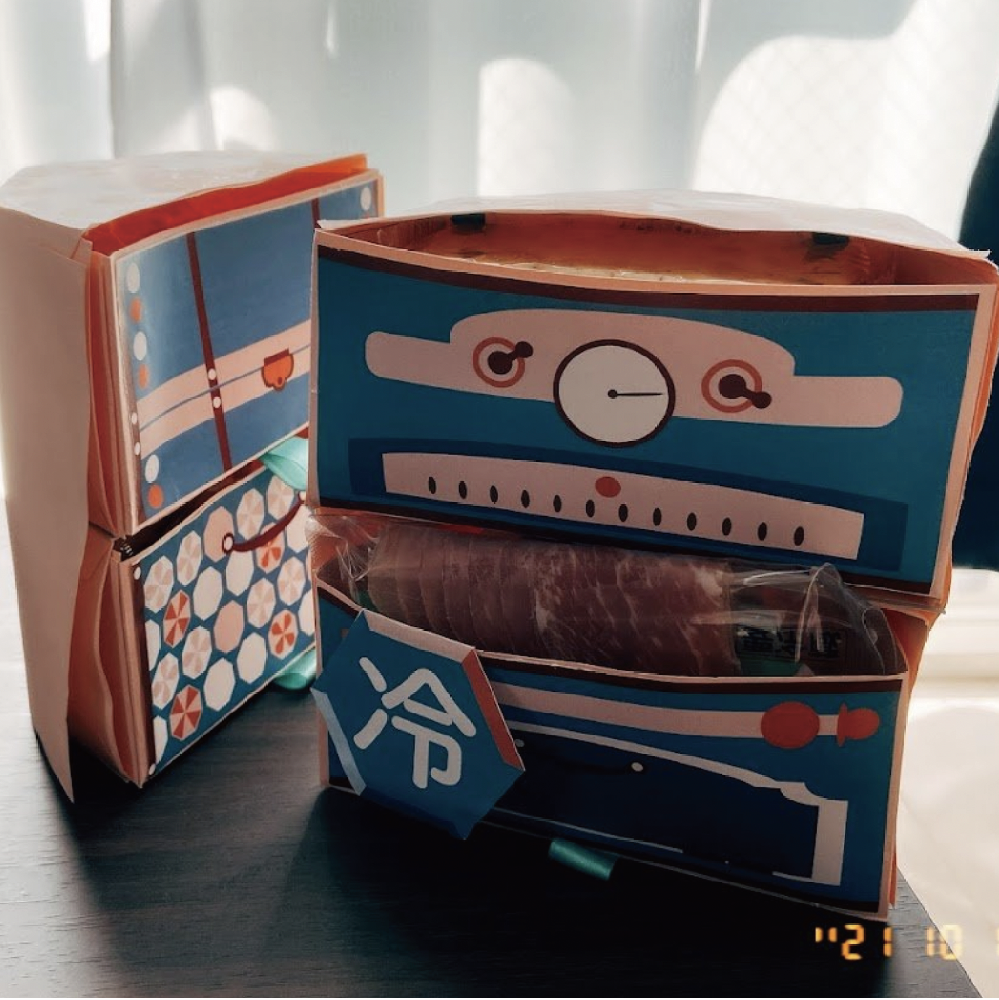
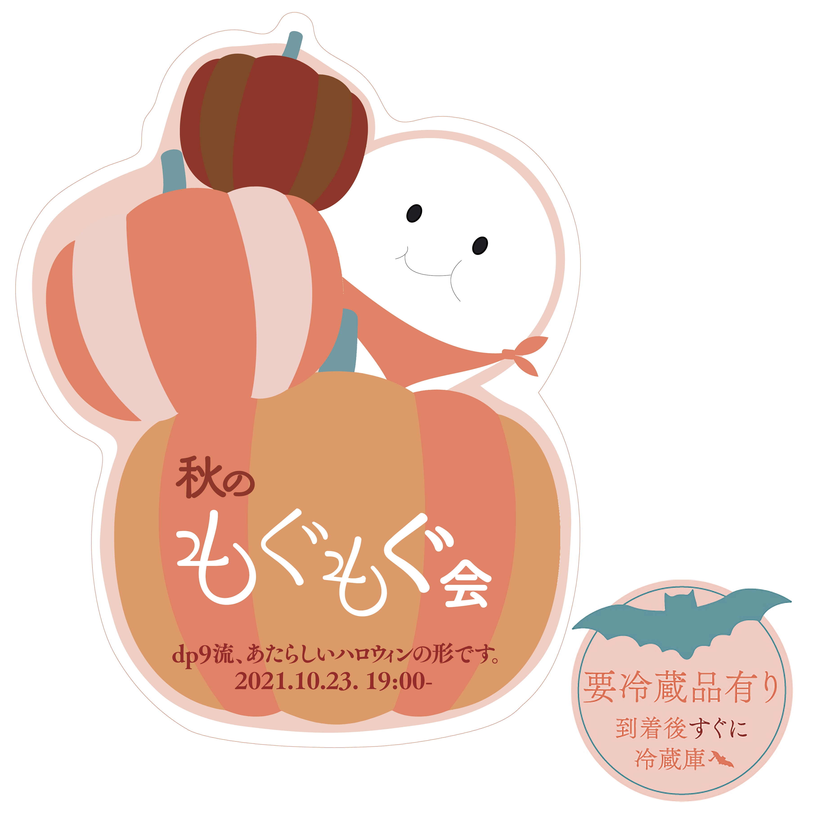

Mogumogu
2021
Illustrator / Photoshop

チーム作品「秋のもぐもぐ会の梱包制作」
東大・藝大サークルのDP9でハロウィンイベントを行なった際、梱包制作に携わった。昨年はコロナの影響で大勢の人が一同に集まることは不可能であったため、郵送でお菓子などを送り当日にオンラインで集まるというハロウィンパーティーの形を取ったためである。
 

オンラインでもできる限り参加者に楽しんでもらいたいとたくさんの話し合いの末、最終的にカボチャをモチーフに段ボールから出すとカボチャの形になり,中のケースにお菓子が詰まっているという構造になった。特に色合いにはこだわりカボチャ部分の細い紙を緑色に、中をピンク色にすることでより本物のカボチャらしさを演出している。今回の制作では梱包以外にも郵送段ボールに貼るステッカーも制作した。


